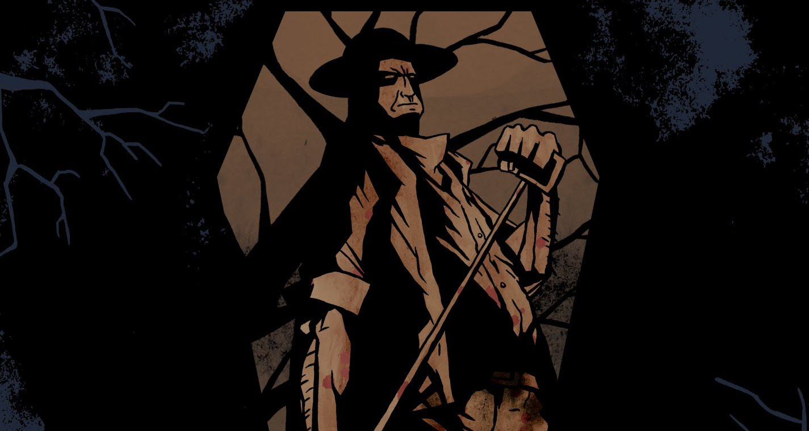

Wake The Dead (Comeback Kid cover)
One day I decided to do a cover of this classic punk/hardcore tune by the the awesome Comeback Kid. The drums were programmed by me and sampled with Steven Slate Drums, which sounded great; Guitar and Bass played by myself using a mesa boogie f-50 head and a Line 6 POD HD Pro. Vocals by my good friends Kieran Brindley (Glass Cannons & Bastions) and Mark Johnston (Tenpenny Nail). Mixed by myself, mastered by Nik Stojkov.
SoundCloud Page